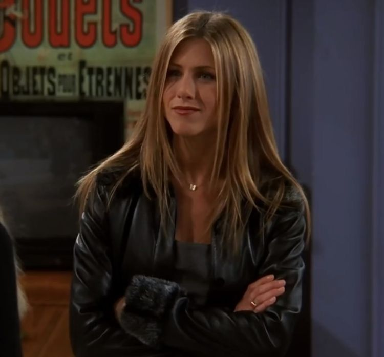
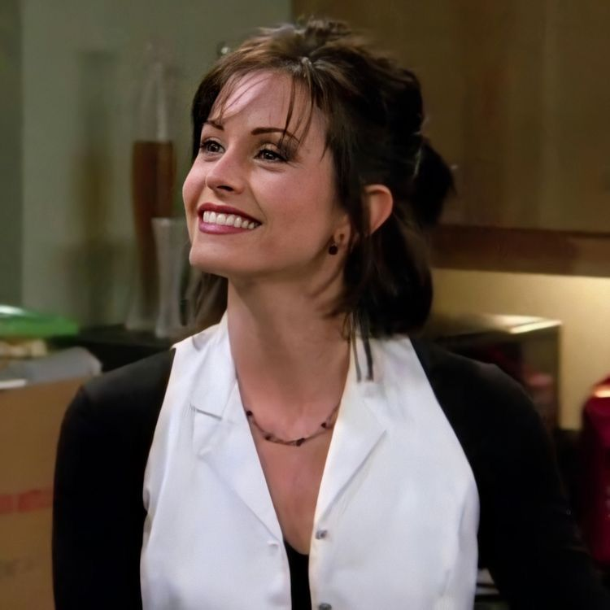
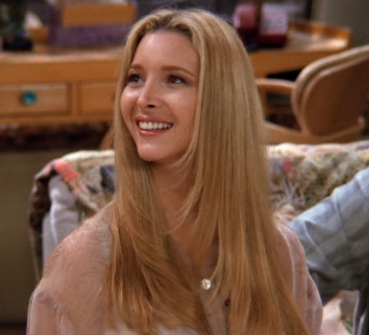
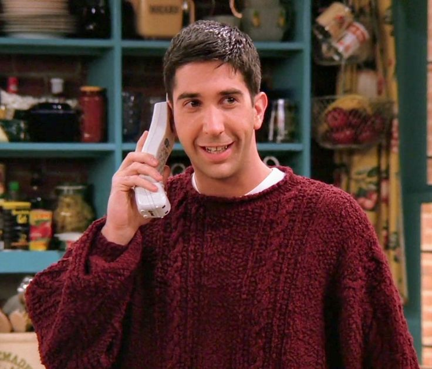
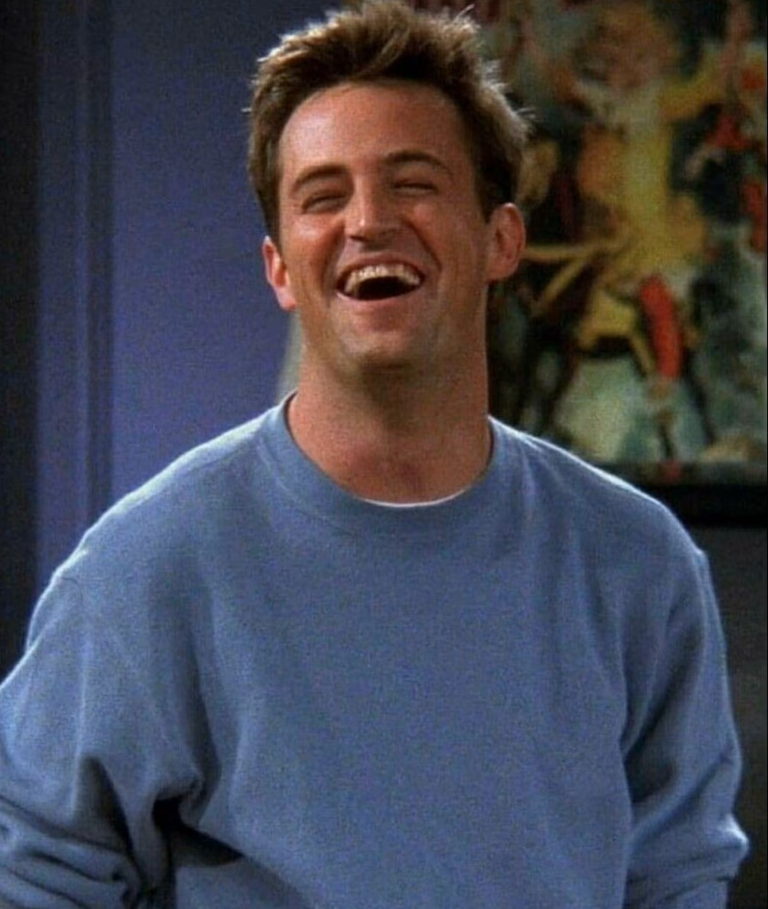
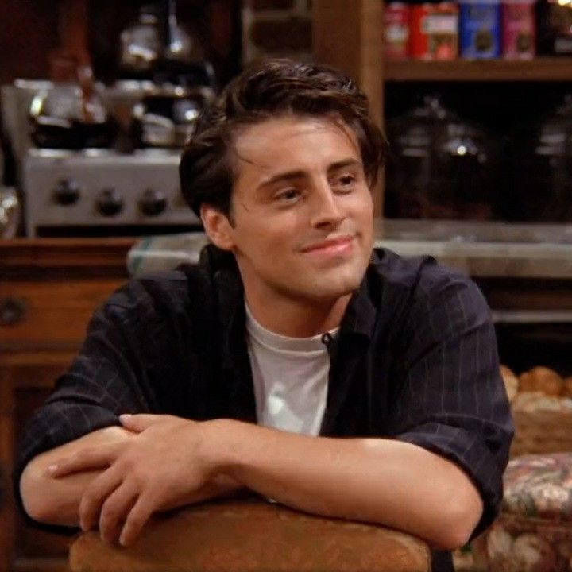

Jennifer Aniston
Rachel Green
The FashionistaShe started as a runaway bride and became an independent, stylish New York woman. Her hair alone inspired a whole generation!
Six friends. Central Perk Café. One orange couch. Extra large coffee mugs. A whole lot of coffee — and a lifetime of memories.
Friends follows six inseparable friends living in New York City, hanging out at Central Perk coffee shop and squeezing into their cozy Manhattan apartments. Through love, breakups, job changes, and life's messiest moments, they always find their way back to each other — and to that legendary orange couch. Packed with unforgettable moments, timeless humor, and lines you'll be quoting for the rest of your life. So grab your coffee and welcome to the gang! ☕

Jennifer Aniston
She started as a runaway bride and became an independent, stylish New York woman. Her hair alone inspired a whole generation!

Courteney Cox
Monica is the heart of the group — a passionate chef, obsessive cleaner, and fiercely competitive friend. Her apartment is basically the gang's HQ.

Lisa Kudrow
Quirky, warm, and wonderfully weird. A masseuse and singer-songwriter whose greatest hit is Smelly Cat. One of a kind — truly.

David Schwimmer
A hopeless romantic with three divorces and a passion for dinosaurs. He's been in love with Rachel since high school. And yes — they were on a break.

Matthew Perry
Sarcasm is his love language. Could this BE a more loveable character? His job is a mystery to everyone, but his heart is wide open.

Matt LeBlanc
Charming, loveable, and deeply committed to two things: Acting and food. He has the biggest heart in the group — and he does NOT share food.
1994 – 1995
Six friends meet at Central Perk, Ross pines for Rachel, and a legendary couch is claimed.
1995 – 1996
Ross and Rachel finally get together — and the whole world holds its breath.
1996 – 1997
Ross and Rachel split, Chandler and Janice keep happening, and Joey lands a big role.
1997 – 1998
Ross gets married (again), and Monica and Chandler share a surprising night in London.
1998 – 1999
Monica and Chandler try to keep their relationship secret — and completely fail.
1999 – 2000
Chandler proposes to Monica in the most emotional scene of the whole series.
2000 – 2001
Monica and Chandler get married — and Phoebe discovers she might be pregnant.
2001 – 2002
Rachel gives birth to Emma, and everyone wonders who the father is — well, not for long.
2002 – 2003
Ross chases Rachel to Barbados, and the gang navigates love, jealousy and bad hair in the rain.
2003 – 2004
Rachel gets off the plane. The keys are left on the counter. 52 million people cry together.